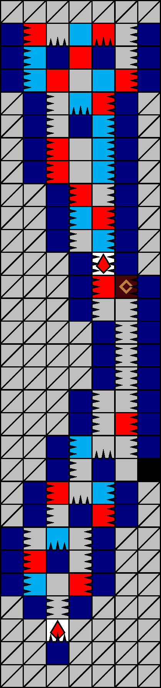
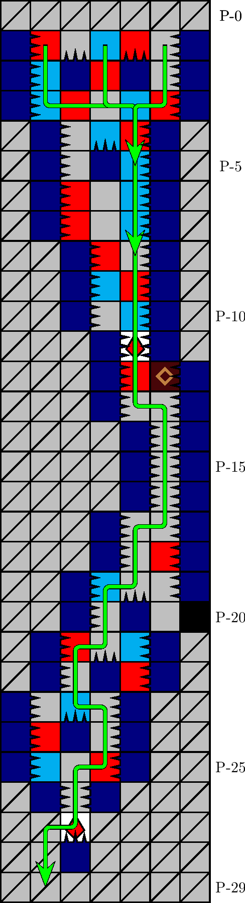

一般指針
エリア・縦穴


指針
縦穴は，必ず定型経路に従って潜行します．途中で連続急降下が可能です．
解説
縦穴とは，図 3.2.13.1 のエリアを指します． 1000 m型 44 行目に確率で出現します． P-1 行目の針の配列によって同定されます．図 3.2.13.2 の経路が定型です．
本エリアには，圧迫要因の塊 P-(11, +2) や，袋小路 P-(22, +1) が存在します．これらによる事故を受けないため，定型経路を必ず記憶し，これに従って潜行します．
座標 P-(4, +1) で青石破壊後即座に急降下，さらにその後 P-(7, +1) で連続急降下が可能です．続く白石の連結成分までをまとめて破壊できるため，これら急降下は特に後期において推奨されます．
注意: 座標 P-(13, +2) では急降下しません．結果的に迂遠であることに加え，落下してきた塊 P-(11, +2) に圧迫される危険があります． P-(13, +2) からの落下中は，左入力し続けます．
エリアの離脱は，続くエリア・通気口へ少ない横移動で進入するために， −2 列から行うことが推奨されます（「エリア・通気口」を参照）．